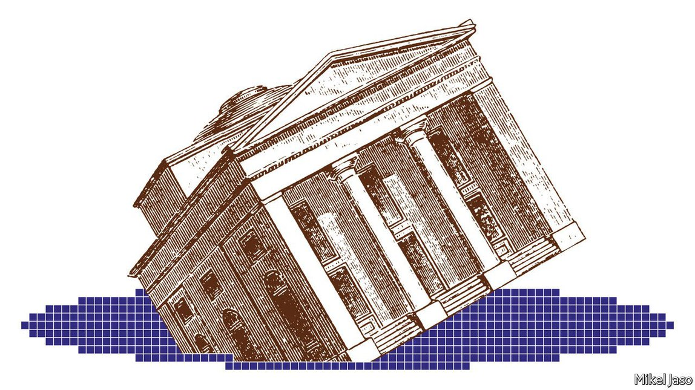
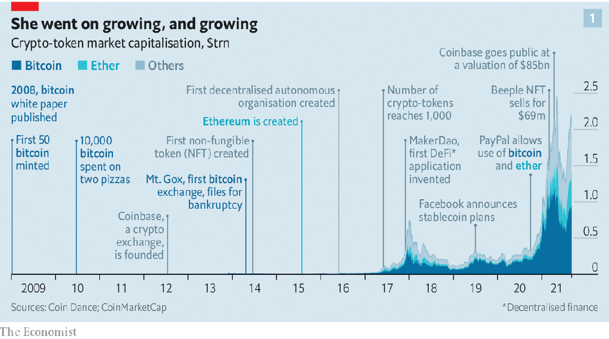
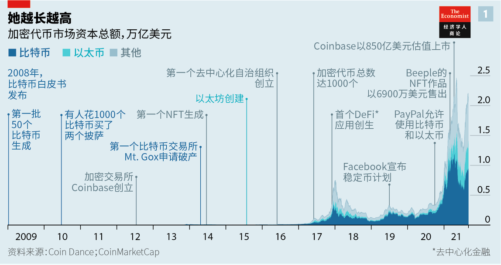
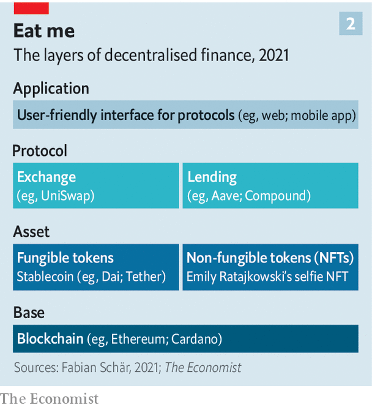
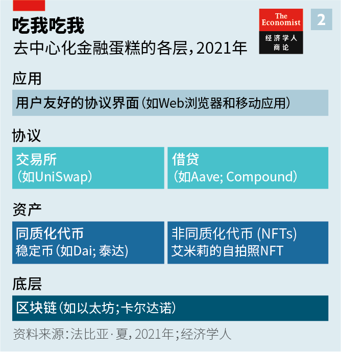
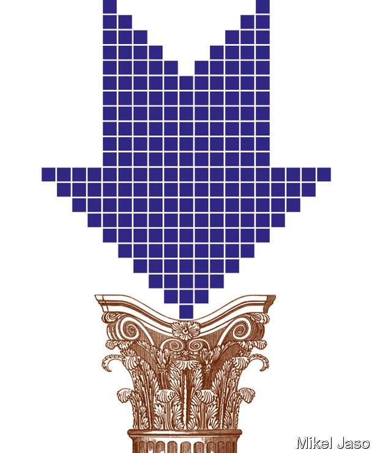

2021-10-10T13:16:47+00:00
Curiouser and curiouser
越来越新奇
越來越新奇
Adventures in DeFi-land
梦游DeFi仙境
夢遊DeFi仙境
Can decentralised finance lay the foundations for an open digital economy?
去中心化金融能否为开放的数字经济奠定基础？【深度】
去中心化金融能否為開放的數字經濟奠定基礎？【深度】
THE AVATARS are mostly cartoon versions of people. They are all milling around a swimming pool built like a funnel, with virtual water sliding out of sight through its navel. To move, users manipulate keyboard controls familiar to anyone who misspent their youth playing computer games: W, A, S, D to walk forwards, left, backwards and right; space bar to jump. A sign next to the pool reads “diving allowed”. Your correspondent presses W and her flaxen-haired simulated self climbs up and over the edge of the red diving board, plunging into the pool’s centre.
头像大多是卡通版的人。它们都在一个形似漏斗的游泳池里来回转悠，虚拟的水流消失在漏斗颈深处。用户操作键盘来移动自己的位置。这些按键对那些少年时代都花在了打游戏上的人都再熟悉不过了：W、A、S、D分别是向前、向左、向后、向右走；空格键是跳跃。泳池旁的标识写着“可以潜水”。笔者按下了W，她那亚麻色头发的化身攀爬上红色跳水板的边缘，跃入水池中央。
頭像大多是卡通版的人。它們都在一個形似漏斗的游泳池裡來迴轉悠，虛擬的水流消失在漏斗頸深處。用戶操作鍵盤來移動自己的位置。這些按鍵對那些少年時代都花在了打遊戲上的人都再熟悉不過了：W、A、S、D分別是向前、向左、向後、向右走；空格鍵是跳躍。泳池旁的標識寫着“可以潛水”。筆者按下了W，她那亞麻色頭髮的化身攀爬上紅色跳水板的邊緣，躍入水池中央。
This is what it is like to enter Decentraland, a virtual-reality platform built on the Ethereum blockchain, also known as a “metaverse”, where virtual shops sell digital collectables and tokens. The disorientating “down the rabbit hole” feeling of diving in is all too similar to what you feel when you first hear of developers’ efforts to “decentralise” everything you do online. A growing number of them are seeking to rebuild both the financial system and the internet economy using blockchains—databases distributed over many computers and kept secure by cryptography. The ultimate goal is to replace intermediaries like global banks and tech platforms with software built on top of networks that direct the value they generate back to the users who own and run them.
这就是进入“散境”（Decentraland）的情景。它是一个建立在以太坊区块链上的虚拟现实平台，也叫“元宇宙”，里头的虚拟店铺出售数字收藏品和代币。当你第一次听到开发人员要把你在网上所做的一切都“分散化”时，那感觉着实很像跳水“掉进兔子洞”时的迷失感。越来越多开发者正寻求用区块链（分布在众多计算机上的数据库，通过加密保持安全）重建金融系统和互联网经济。其最终目标是用建立在网络之上的软件取代全球银行和科技平台等中介机构，将这些网络产生的价值送回拥有和运营它们的用户。
這就是進入“散境”（Decentraland）的情景。它是一個建立在以太坊區塊鏈上的虛擬現實平台，也叫“元宇宙”，裡頭的虛擬店鋪出售數字收藏品和代幣。當你第一次聽到開發人員要把你在網上所做的一切都“分散化”時，那感覺着實很像跳水“掉進兔子洞”時的迷失感。越來越多開發者正尋求用區塊鏈（分布在眾多計算機上的數據庫，通過加密保持安全）重建金融系統和互聯網經濟。其最終目標是用建立在網絡之上的軟件取代全球銀行和科技平台等中介機構，將這些網絡產生的價值送回擁有和運營它們的用戶。
Of all digital activities, it is efforts towards decentralising finance that are most advanced. Far from the self-aggrandising ambition of Wall Street, decentralised finance (DeFi) instead seeks Utopian-sounding crowdsourced control. Applications and functions are run not by a single centralised entity or company, but by user-operated “decentralised autonomous organisations” (DAOs). “I will be just a regular community member,” says Rune Christensen, the founder of MakerDAO, a DeFi organisation. “In the end, it is mostly about how you contribute, not who you are.”
在所有数字活动中，朝向金融去中心化的努力是最为先进的。与华尔街自我膨胀的野心全然不同，“分散式金融”（DeFi，或称“去中心化金融”）寻求的是乌托邦式的众包控制。应用和功能不是由单个中央实体或公司，而是由用户操作的“分散化自治组织”（DAO）运营。“我将只是一个普通的社区成员，”DeFi组织MakerDAO的创始人鲁内·克里斯滕森（Rune Christensen）说，“归根结底，它主要关乎你如何参与，而非你是谁。”
在所有數字活動中，朝向金融去中心化的努力是最為先進的。與華爾街自我膨脹的野心全然不同，“分散式金融”（DeFi，或稱“去中心化金融”）尋求的是烏托邦式的眾包控制。應用和功能不是由單個中央實體或公司，而是由用戶操作的“分散化自治組織”（DAO）運營。“我將只是一個普通的社區成員，”DeFi組織MakerDAO的創始人魯內·克里斯滕森（Rune Christensen）說，“歸根結底，它主要關乎你如何參與，而非你是誰。”
Talk of blockchains, DAOs and metaverses sounds so utterly bewildering and far-fetched that it might be tempting to give up listening to the DeFi crowd. The success of this nascent technology is, indeed, far from guaranteed. But piece by piece a new kind of economy is being built through applications on various blockchains. Each addition makes it more likely that the whole will amount to something meaningful and powerfully disruptive.
围绕区块链、DAO和元宇宙的讨论听起来叫人一头雾水、不知所云，你可能都不想再听“DeFi人”的噪音。实际上，这项新兴技术的成功确实远非板上钉钉。但是，一种新型经济正通过各种区块链上的应用一块块搭建起来。每添加一块，其整体都愈发有可能成为某种有意义且具有强大颠覆性的事物。
圍繞區塊鏈、DAO和元宇宙的討論聽起來叫人一頭霧水、不知所云，你可能都不想再聽“DeFi人”的噪音。實際上，這項新興技術的成功確實遠非板上釘釘。但是，一種新型經濟正通過各種區塊鏈上的應用一塊塊搭建起來。每添加一塊，其整體都愈發有可能成為某種有意義且具有強大顛覆性的事物。
DeFi has grown tremendously in scale and scope in recent years. The Ethereum blockchain, which underpins much of DeFi activity, settled $2.5trn-worth of transactions in the second quarter of 2021, including payments and transactions to facilitate trading and lending. (Visa, a payments giant, settled about the same amount in the same period; Nasdaq, a stock exchange, traded six times as much.) Around $90bn of collateral is being used for various DeFi functions, compared with less than $1bn in early 2018. More than half is held in the five most popular DeFi applications, but developers are working on more than a hundred others, dozens of which are rapidly amassing assets. Innovations, such as automated marketmakers, arbitrage systems and self-stabilising currency regimes, are already pushing the boundaries of financial technology.
近年来，DeFi在规模和范围上都有了巨大的增长。支撑大部分DeFi活动的以太坊区块链在2021年第二季度完成了价值2.5万亿美元的交易，包括用于促成买卖和放贷的支付和交易。（支付巨头Visa在同一时期的结算金额大致相同；证券交易所纳斯达克的交易额是其六倍。）约900亿美元的抵押品被用于各种DeFi功能，而在2018年初还不到10亿美元。其中超过一半用于五个最受欢迎的DeFi应用，但开发人员正在创建其他一百多个应用，其中有几十个正在迅速积累资产。自动化做市商、套利系统和自稳定货币机制等创新已经在拓展金融科技的疆界。
近年來，DeFi在規模和範圍上都有了巨大的增長。支撐大部分DeFi活動的以太坊區塊鏈在2021年第二季度完成了價值2.5萬億美元的交易，包括用於促成買賣和放貸的支付和交易。（支付巨頭Visa在同一時期的結算金額大致相同；證券交易所納斯達克的交易額是其六倍。）約900億美元的抵押品被用於各種DeFi功能，而在2018年初還不到10億美元。其中超過一半用於五個最受歡迎的DeFi應用，但開發人員正在創建其他一百多個應用，其中有幾十個正在迅速積累資產。自動化做市商、套利系統和自穩定貨幣機制等創新已經在拓展金融科技的疆界。
The promise of DeFi is that it could lead to a better kind of finance: a system that is quicker, cheaper, more transparent and less reliant on powerful centralised institutions. It could also underpin a digital economy that is less dominated by a handful of tech giants. But there are plenty of pitfalls in the way, not least the huge amount of speculation taking place in the world of DeFi and the risk that it becomes colonised by dirty money or sullied by blockchains’ vast energy use.
DeFi的承诺是它可以带来一种更好的金融模式：一个更快捷、便宜、透明也更少依赖强大中央机构的系统。它还可以支撑一种不那么被少数科技巨头主导的数字经济。但这条道路上存在很多陷阱，尤其是在DeFi世界中发生着大量投机活动，以及它有可能充斥着黑钱，或因区块链的巨大能耗而蒙上阴影。
DeFi的承諾是它可以帶來一種更好的金融模式：一個更快捷、便宜、透明也更少依賴強大中央機構的系統。它還可以支撐一種不那麼被少數科技巨頭主導的數字經濟。但這條道路上存在很多陷阱，尤其是在DeFi世界中發生着大量投機活動，以及它有可能充斥着黑錢，或因區塊鏈的巨大能耗而蒙上陰影。
DeFi’s opportunity comes about because centralisation brings problems. True, it is cheaper to build a financial-settlement system run by an entity everyone trusts, such as the Federal Reserve, than to get a diffuse group of individuals to verify transactions. But government infrastructure ossifies. Private networks can tend towards monopoly, encouraging anti-competitive behaviour and rent extraction.
DeFi的机遇源自中心化产生的问题。诚然，相比让一群分散的个体来验证交易，建立一个由人人信任的实体（比如美联储）运行的金融结算系统的成本更低廉。但政府基础设施会僵化。而私营网络可能趋于垄断，助长反竞争行为和抽租。
DeFi的機遇源自中心化產生的問題。誠然，相比讓一群分散的個體來驗證交易，建立一個由人人信任的實體（比如美聯儲）運行的金融結算系統的成本更低廉。但政府基礎設施會僵化。而私營網絡可能趨於壟斷，助長反競爭行為和抽租。
The Fed’s adoption of an instant-payments system, for instance, has proceeded at a glacial pace. Card-network operators like Mastercard and Visa make gross profit margins of 60-80%. Tech giants can wield their market power anti-competitively, or in ways their users dislike. Apple changed how its platform worked with third parties to stop Facebook tracking users; Facebook itself alters its content-delivery algorithms as it pleases; YouTube “demonetises” content creators on a whim. Each takes the lion’s share of the profits associated with their networks.
例如，美联储采用一个即时支付系统的速度极为缓慢。而万事达卡和Visa卡等卡网络运营商的毛利在60%到80%。科技巨头能够以反竞争或用户不喜欢的方式使用自己的市场影响力。苹果改变了其平台与第三方合作的方式以阻止Facebook跟踪用户；Facebook自己则随心所欲地改变内容推荐算法；YouTube可以由着性子不让某些内容创作者变现。它们每家都拿走了与其网络相关的利润的大头。
例如，美聯儲採用一個即時支付系統的速度極為緩慢。而萬事達卡和Visa卡等卡網絡運營商的毛利在60%到80%。科技巨頭能夠以反競爭或用戶不喜歡的方式使用自己的市場影響力。蘋果改變了其平台與第三方合作的方式以阻止Facebook跟蹤用戶；Facebook自己則隨心所欲地改變內容推薦算法；YouTube可以由着性子不讓某些內容創作者變現。它們每家都拿走了與其網絡相關的利潤的大頭。
Decentralisation offers an alternative: interoperable, transparent, often efficient systems that, by distributing control over software, guard against the concentration of power. The first instance of such a decentralised system was Bitcoin, a digital-payments network verified by a blockchain, which was created in 2009 with the aim of replacing centrally issued money. But technology has evolved since then, and Bitcoin is now largely a distraction. People “seize on the money part, and either glorify it as a new kind of monetary system…or crucify it as a danger to economic stability,” writes Marc Andreessen of Andreessen Horowitz, a venture-capital firm that has raised some $3bn to invest in crypto-technology. They are missing the point. “Crypto represents an architectural shift in how technology works and therefore how the world works.”
去中心化提供了另一种选择：可互操作、透明、通常都很高效的系统，通过分散对软件的控制来防范权力集中。这种去中心化系统的第一个例子是比特币，这是一种通过区块链验证的数字支付网络，于2009年创建，旨在取代中央发行货币。但自那时起技术已经发展演变，而比特币如今基本上成了一种杂音。人们“拿关于钱的部分大做文章，要么把它美化成一种新型货币体系……要么抨击它是对经济稳定的威胁。”风险投资公司安德森霍洛维茨（Andreessen Horowitz）的马克·安德森（Marc Andreessen）写道。该公司已筹集了约30亿美元用于投资加密技术。他们没有抓住重点，他写道，“加密代表的是技术运作方式以及由此导致的世界运作方式的架构转变。”
去中心化提供了另一種選擇：可互操作、透明、通常都很高效的系統，通過分散對軟件的控制來防範權力集中。這種去中心化系統的第一個例子是比特幣，這是一種通過區塊鏈驗證的數字支付網絡，於2009年創建，旨在取代中央發行貨幣。但自那時起技術已經發展演變，而比特幣如今基本上成了一種雜音。人們“拿關於錢的部分大做文章，要麼把它美化成一種新型貨幣體系……要麼抨擊它是對經濟穩定的威脅。”風險投資公司安德森霍洛維茨（Andreessen Horowitz）的馬克·安德森（Marc Andreessen）寫道。該公司已籌集了約30億美元用於投資加密技術。他們沒有抓住重點，他寫道，“加密代表的是技術運作方式以及由此導致的世界運作方式的架構轉變。”
That shift is distributed consensus—the ability for many “decentralised” participants in a network to establish trust. Its potential to facilitate more than payments became clearer with the creation in 2015 of the Ethereum blockchain (see chart 1). This stores and records lines of computer code, including entire programs, which are visible to all. That makes it possible to construct smart contracts—self-executing agreements in which a chain of actions follows when certain conditions are met. These are automatically enforced and cannot be tampered with.
这种转变即分布式共识——让一个网络中的众多“去中心化”参与者建立信任的能力。2015年以太坊区块链创建后有一点变得更清晰了，那就是这种转变有可能促进的事物不止于支付（见图表1）。这种区块链上存储和记录着包含整个程序的一行行计算机代码，它们对所有人可见。这使得构建智能合约成为可能。所谓智能合约是自动执行的协议，当某些条件被满足时会触发一连串行动。它们是自动执行的，且不能篡改。
這種轉變即分布式共識——讓一個網絡中的眾多“去中心化”參與者建立信任的能力。2015年以太坊區塊鏈創建後有一點變得更清晰了，那就是這種轉變有可能促進的事物不止於支付（見圖表1）。這種區塊鏈上存儲和記錄著包含整個程序的一行行計算機代碼，它們對所有人可見。這使得構建智能合約成為可能。所謂智能合約是自動執行的協議，當某些條件被滿足時會觸發一連串行動。它們是自動執行的，且不能篡改。
The Ethereum blockchain and others designed to store lines of code, like Cardano, also issue and use their own tokens, called “ether” and “ADA”, respectively. To verify a transaction on the Ethereum blockchain you must pay a variable “gas” fee, owed in ether.
以太坊区块链和卡尔达诺（Cardano）等旨在存储代码的区块链也发行和使用自己的代币，分别叫以太币（ether）和艾达币（ADA）。要在以太坊区块链上验证一笔交易，你必须用以太币支付一笔额度不定的“燃油费”（gas）。
以太坊區塊鏈和卡爾達諾（Cardano）等旨在存儲代碼的區塊鏈也發行和使用自己的代幣，分別叫以太幣（ether）和艾達幣（ADA）。要在以太坊區塊鏈上驗證一筆交易，你必須用以太幣支付一筆額度不定的“燃油費”（gas）。
The advantage of using a blockchain is that it is like a new sort of computer. A physical computer is a way to store data and process it with a set of instructions, called a program. The Ethereum blockchain, too, is a way to store data and operate on it, like a virtual computer that runs on top of a network of physical computers. The consequence is that it ensures that “the computer will continue to operate as designed”, as Chris Dixon, who launched Andreessen’s crypto fund, has described it.
使用区块链的优势在于它就像一种新型计算机。一台实体计算机是一种存储数据并根据一组指令（即“程序”）处理数据的方式。以太坊区块链也是一种存储数据并对其进行操作的方式，就像是一台在实体计算机网络之上运行的虚拟计算机。其结果是，用安德森的加密基金的发起人克里斯·迪克森（Chris Dixon）的话说，它确保了“这台计算机会持续按设计运行”。
使用區塊鏈的優勢在於它就像一種新型計算機。一台實體計算機是一種存儲數據並根據一組指令（即“程序”）處理數據的方式。以太坊區塊鏈也是一種存儲數據並對其進行操作的方式，就像是一台在實體計算機網絡之上運行的虛擬計算機。其結果是，用安德森的加密基金的發起人克里斯·迪克森（Chris Dixon）的話說，它確保了“這台計算機會持續按設計運行”。
Every computer, outside a blockchain, is controlled by a person or organisation that can change their mind. This is sometimes true at the physical, hardware level: Apple, in many ways, retains broad control over the devices it sells through its ability to push software updates (the way in which it neutered Facebook’s trackers). More important, this applies across all web pages and applications. Each time someone logs on to Facebook, say, they rely on the servers the company runs to host its website. By controlling the hardware, companies can change the software as they please.
在区块链之外，每台计算机都由某个个人或组织控制，他们可以改变主意。有时他们在实物和硬件层面这么做：从许多方面来看，苹果保有对其销售的设备的广泛控制，这是通过它推送软件更新的能力来实现的（它就是用这种方式阻断了Facebook的追踪器）。更重要的是，这会对所有的网页和应用起作用。例如，每次有人登录Facebook，他们都依赖这家公司运营的用来托管其网站的服务器。通过控制硬件，企业可以随心所欲地更改软件。
在區塊鏈之外，每台計算機都由某個個人或組織控制，他們可以改變主意。有時他們在實物和硬件層面這麼做：從許多方面來看，蘋果保有對其銷售的設備的廣泛控制，這是通過它推送軟件更新的能力來實現的（它就是用這種方式阻斷了Facebook的追蹤器）。更重要的是，這會對所有的網頁和應用起作用。例如，每次有人登錄Facebook，他們都依賴這家公司運營的用來託管其網站的服務器。通過控制硬件，企業可以隨心所欲地更改軟件。
On a blockchain, though, this relationship is inverted: the software governs the hardware, and can make guarantees. Computers that are controlled by blockchain technology are, in Mr Dixon’s words, “computers that can make commitments”.
然而，在区块链上，这种关系是颠倒的：软件管理硬件，并且可以做出保证。由区块链技术控制的计算机，用迪克森的话说，就是“可以做出承诺的计算机”。
然而，在區塊鏈上，這種關係是顛倒的：軟件管理硬件，並且可以做出保證。由區塊鏈技術控制的計算機，用迪克森的話說，就是“可以做出承諾的計算機”。
Once a decentralised foundation to store and execute lines of code has been laid, anything can be built on top—assets, say, or applications (see chart 2). The only limit is the developer’s imagination. All kinds of “tokens”, or digital representations of assets, exist. Some resemble financial building-blocks, like shares, bonds and “stablecoins”, which are typically pegged to conventional currencies. Others are governance tokens, which work as votes determining how DAOs are run. And “non-fungible” tokens (NFTs) represent unique assets, like an image or a video. The market for these has boomed over the past year. Some $23bn-worth of NFTs now exist.
一旦存储和执行代码的去中心化基础铺设完毕，就可以在其上构建任何东西——比如资产或应用（见图表2）。唯一的限制是开发者的想象力。存在各种各样的“代币”，也就是资产的数字化代表。有些代币类似于支撑金融的工具，如股票、债券和通常与传统货币挂钩的“稳定币”。其他是治理代币，充当投票来决定DAO的运行方式。而“不可替换”代币或称非同质化代币（NFT）代表着独一无二的资产，如一幅图像或一段视频。这类产品的市场在过去一年里蓬勃发展。现在存在价值约230亿美元的NFT。
一旦存儲和執行代碼的去中心化基礎鋪設完畢，就可以在其上構建任何東西——比如資產或應用（見圖表2）。唯一的限制是開發者的想象力。存在各種各樣的“代幣”，也就是資產的數字化代表。有些代幣類似於支撐金融的工具，如股票、債券和通常與傳統貨幣掛鉤的“穩定幣”。其他是治理代幣，充當投票來決定DAO的運行方式。而“不可替換”代幣或稱非同質化代幣（NFT）代表着獨一無二的資產，如一幅圖像或一段視頻。這類產品的市場在過去一年裡蓬勃發展。現在存在價值約230億美元的NFT。
Tokens can be swapped or lent out through “protocols”—the rules that govern how transactions take place. These in turn are governed by DAOs and can be altered only by consensus. Users can then buy and swap tokens through a web-browser-based interface that connects them to protocols.
代币可以通过“协议”交换或借出。这些协议即管理交易应如何发生的规则。它们由DAO管理，只能通过共识被更改。之后用户就可以通过一个基于Web浏览器的界面连接到协议来购买和交换代币。
代幣可以通過“協議”交換或借出。這些協議即管理交易應如何發生的規則。它們由DAO管理，只能通過共識被更改。之後用戶就可以通過一個基於Web瀏覽器的界面連接到協議來購買和交換代幣。
Off with their heads
砍掉它们的脑袋
砍掉它們的腦袋
To enter the decentralised world it is necessary to create a wallet, which stores tokens. One type of wallet is managed by a centralised exchange, like Coinbase. Another, like MetaMask, lets users hold their own private keys. Centralised systems feel familiar: they have usernames and passwords that can be reset. They also hold tokens on users’ behalf, making them a target for attacks. Dishonest or incompetent exchange operators have lost or had customers’ assets stolen from them. Users of MetaMask or a similar wallet, by contrast, have full control over their assets. But if they lose their key, their tokens are lost for ever. MetaMask counts 10m active users, up from about 600,000 a year ago.
要进入一个去中心化的世界，必须创建一个钱包来存储代币。一类钱包由中心化交易所管理，例如Coinbase。另一类，如MetaMask，让用户拥有自己的私钥。中央系统让人感觉很熟悉：它们有用户名和可以重置的密码。它们还为用户代持代币，这使它们成为了攻击目标。已经有不诚实或不称职的交易所运营商弄丢了客户的资产或导致客户资产被盗。相比之下，MetaMask或其他类似钱包的用户可以完全控制自己的资产。但如果他们弄丢了密钥，代币就永远丢失了。MetaMask目前拥有一千万活跃用户，一年前还只有约60万。
要進入一個去中心化的世界，必須創建一個錢包來存儲代幣。一類錢包由中心化交易所管理，例如Coinbase。另一類，如MetaMask，讓用戶擁有自己的私鑰。中央系統讓人感覺很熟悉：它們有用戶名和可以重置的密碼。它們還為用戶代持代幣，這使它們成為了攻擊目標。已經有不誠實或不稱職的交易所運營商弄丟了客戶的資產或導致客戶資產被盜。相比之下，MetaMask或其他類似錢包的用戶可以完全控制自己的資產。但如果他們弄丟了密鑰，代幣就永遠丟失了。MetaMask目前擁有一千萬活躍用戶，一年前還只有約60萬。
Creating a wallet creates a unique online identity, which allows you to interact with any DeFi application, including metaverses like Decentraland. This in turn lets you deposit tokens to earn interest, swap them for other coins, or shop in metaverse malls. Genuine innovation is also taking place in the world of DeFi, which could improve upon real-world finance. Three particularly impressive examples stand out.
创建一个钱包会创建一个独特的在线身份，让你可与任何DeFi应用交互，包括像“散境”这样的元宇宙。之后你可以存入代币以赚取利息、把它们换成其他代币，或在元宇宙商场里购物。在DeFi领域也在发生真正的创新，可能改善现实世界的金融系统。这里有三个尤其突出的例子。
創建一個錢包會創建一個獨特的在線身份，讓你可與任何DeFi應用交互，包括像“散境”這樣的元宇宙。之後你可以存入代幣以賺取利息、把它們換成其他代幣，或在元宇宙商場里購物。在DeFi領域也在發生真正的創新，可能改善現實世界的金融系統。這裡有三個尤其突出的例子。
One is decentralised exchanges. Given the vulnerability of centralised exchanges to attacks and theft, developers have set about building alternatives on a blockchain. Rather than depositing assets for, say, Coinbase to trade on your behalf, execution is instead carried out through smart contracts. Both sides of the trade are performed in one indivisible transaction. This eliminates the need for intermediaries such as escrow services and central counterparty clearing-houses. UniSwap, one of the largest decentralised exchanges, is especially popular for swapping Ethereum-based tokens. It trades tokens worth around $1bn every day.
一是去中心化交易所。鉴于中心化交易所易遭攻击和盗窃，开发人员已着手在区块链上构建替代方案。这不同于把资产存入Coinbase让它来代表你交易，而是通过智能合约来执行交易。交易双方都在同一个不可分割的交易中履行交易。这就不再需要第三方托管服务和中央合约方清算所等中介机构。最大的去中心化交易所之一UniSwap是交换基于以太坊的代币的热门地。它每天交易的代币价值约达10亿美元。
一是去中心化交易所。鑒於中心化交易所易遭攻擊和盜竊，開發人員已着手在區塊鏈上構建替代方案。這不同於把資產存入Coinbase讓它來代表你交易，而是通過智能合約來執行交易。交易雙方都在同一個不可分割的交易中履行交易。這就不再需要第三方託管服務和中央合約方清算所等中介機構。最大的去中心化交易所之一UniSwap是交換基於以太坊的代幣的熱門地。它每天交易的代幣價值約達10億美元。
The second example relates to the difficulty of issuing a reliable stablecoin. Stable assets are useful: tokens pegged to the dollar or other currencies facilitate transactions between other tokens and provide the basis for financial contracts. Early solutions relied on centralised control, which makes it hard to know for sure that they are fully collateralised. The two biggest stablecoins, Tether and USD Coin, have together issued around $100bn in tokens. The collateral for these, a mix of cash and short-term corporate debt, is held not on a blockchain, but in bank or brokerage accounts. Both firms decide how to back their stablecoins and when to publish their accounts. In March New York’s attorney-general found that Tether was not fully collateralised for periods in 2017 and 2018, and fined it $18.5m. (Tether denied wrongdoing.)
第二个例子与发行可靠的稳定币的难度有关。稳定资产很有用处：与美元或其他货币挂钩的代币促成了其他代币间交易，并为金融合约提供了基础。早期的解决方案依赖中央控制，这使得要确定它们受充分抵押是有难度的。两大稳定币泰达币和USD Coin合共发行了约1000亿美元的代币。其抵押品是现金和短期公司债的混合，它们不是保存在一个区块链上，而是存储在银行或经纪账户中。两家公司都会决定如何支撑自己的稳定币以及何时发布账户现状。3月，纽约州总检察长办公室发现泰达公司在2017年和2018年期间抵押不足，对其处以1850万美元罚款。（泰达否认有不当行为。）
第二個例子與發行可靠的穩定幣的難度有關。穩定資產很有用處：與美元或其他貨幣掛鉤的代幣促成了其他代幣間交易，並為金融合約提供了基礎。早期的解決方案依賴中央控制，這使得要確定它們受充分抵押是有難度的。兩大穩定幣泰達幣和USD Coin合共發行了約1000億美元的代幣。其抵押品是現金和短期公司債的混合，它們不是保存在一個區塊鏈上，而是存儲在銀行或經紀賬戶中。兩家公司都會決定如何支撐自己的穩定幣以及何時發布賬戶現狀。3月，紐約州總檢察長辦公室發現泰達公司在2017年和2018年期間抵押不足，對其處以1850萬美元罰款。（泰達否認有不當行為。）
One way of knowing for sure that a stablecoin is fully backed is by keeping the collateral on an open blockchain, which is transparent, and storing it in a smart contract. The problem is that the collateral must be held in an asset native to a blockchain, like bitcoin or ether, which fluctuates wildly. There is, however, a clever workaround. The biggest “on-chain” stablecoin is dai, run by Mr Christensen’s MakerDAO. Anyone can create new dai tokens, as long as they lock up enough collateral, usually ether, in a smart contract.
确定一种稳定币受到完全支撑的方法之一是把抵押品保存在透明的开放区块链上，并存储在智能合约中。问题是抵押品必须保存在一种区块链原生资产中，如比特币或以太币，而这些资产的波动性很大。但有一个巧妙的解决方法。最大的“链上”稳定币是dai，由克里斯滕森的MakerDAO运营。任何人都可以创建新的dai币，只要他们在智能合约中锁定足够的抵押品，通常是以太币。
確定一種穩定幣受到完全支撐的方法之一是把抵押品保存在透明的開放區塊鏈上，並存儲在智能合約中。問題是抵押品必須保存在一種區塊鏈原生資產中，如比特幣或以太幣，而這些資產的波動性很大。但有一個巧妙的解決方法。最大的“鏈上”穩定幣是dai，由克里斯滕森的MakerDAO運營。任何人都可以創建新的dai幣，只要他們在智能合約中鎖定足夠的抵押品，通常是以太幣。
Because ether is volatile, the protocol requires users to over-collateralise the tokens they create. If the value of a user’s collateral falls below 150% of the value of the outstanding dai, the smart contract automatically auctions off the collateral to cancel the debt in dai. To reclaim collateral the dai must be returned, plus a small variable “stability” fee (paid in dai) which tends to climb with volatility in collateral.
由于以太币不稳定，该协议要求用户对他们创建的代币做过度抵押。如果一名用户的抵押品价值低于未偿还dai币价值的150%，智能合约就会自动拍卖抵押品以抵消dai币债务。要收回抵押品，必须返还dai币，再加上少量不定值的“稳定”费（以dai币支付）——抵押品的价值波动越大，金额往往就越高。
由於以太幣不穩定，該協議要求用戶對他們創建的代幣做過度抵押。如果一名用戶的抵押品價值低於未償還dai幣價值的150%，智能合約就會自動拍賣抵押品以抵消dai幣債務。要收回抵押品，必須返還dai幣，再加上少量不定值的“穩定”費（以dai幣支付）——抵押品的價值波動越大，金額往往就越高。
Dai is remarkably stable against the dollar. Only once, when ether dropped sharply in 2020, did the peg break, with dai falling by around 10% in 12 hours. This occurred in part because developers had fixed a maximum stability fee into the protocol. To replenish funds and restore the peg new governance tokens were issued, diluting the current owners. The coding problem was solved over the following months by a consensus of those holding the governance tokens. In 2021, when ether crashed again, dai remained stable. Around $6.5bn in dai currently exists.
Dai兑美元的汇率非常稳定。只在2020年以太币大幅下跌时曾经脱钩，dai在12小时内下跌了约10%。发生这种情况的部分原因是开发人员在协议中设定了一个稳定费封顶。为补充资金和恢复挂钩又发行了新的治理代币，这稀释了当前持有者手头的治理代币价值。接下来的几个月里，持有治理代币的人达成的共识解决了编码问题。2021年，当以太币再次崩盘时，dai保持了稳定。目前共存在约65亿美元的dai。
Dai兌美元的匯率非常穩定。只在2020年以太幣大幅下跌時曾經脫鉤，dai在12小時內下跌了約10%。發生這種情況的部分原因是開發人員在協議中設定了一個穩定費封頂。為補充資金和恢復掛鉤又發行了新的治理代幣，這稀釋了當前持有者手頭的治理代幣價值。接下來的幾個月里，持有治理代幣的人達成的共識解決了編碼問題。2021年，當以太幣再次崩盤時，dai保持了穩定。目前共存在約65億美元的dai。
A third example of innovation is lending protocols. Because users can remain unknown, in order to borrow from a lender they must first deposit some tokens, like dai, as collateral. Users can then borrow against that collateral in a different token. But developers have come up with a way to avoid such deposits for “flash loans”, which are instantly issued and settled.
创新的第三个例子是借贷协议。因为用户可以保持匿名，为了从贷方借款，他们必须首先存入一些代币——比如dai——作为抵押。然后他们就可以凭借这些抵押品借入另一种代币。但开发者想出了一种方法，在即时发放和结算的“闪贷”中免去了存入代币作抵押这一步。
創新的第三個例子是借貸協議。因為用戶可以保持匿名，為了從貸方借款，他們必須首先存入一些代幣——比如dai——作為抵押。然後他們就可以憑藉這些抵押品借入另一種代幣。但開發者想出了一種方法，在即時發放和結算的“閃貸”中免去了存入代幣作抵押這一步。
Transactions on blockchains are finalised only when a new bundle of transactions, called a block, is accepted by the network. Adding blocks takes time, around ten minutes on Bitcoin and 13 seconds on Ethereum. For a flash loan on Ethereum a borrower requests and repays the funds, plus a 0.09% fee, within the same block. If the borrower fails to repay, the entire transaction is cancelled, so that no funds were ever borrowed. The lender takes no risk at all. These loans are mostly used for arbitrage opportunities between token-trading platforms. Since their creation, says Fabian Schär of the University of Basel, the markets for most tokens have become more efficient. Two of the biggest lending protocols on the Ethereum blockchain that offer flash loans are Aave and Compound. They have lent out some $16bn and $11bn in tokens, respectively.
区块链上的交易要最终敲定，必须等待被称为区块的新的交易包被整个网络承认。添加区块需要时间——比特币约需要十分钟，以太坊约13秒。在以太坊上闪贷时，借款人在同一个区块内申请和偿还贷款，外加0.09%的费用。如果借款人未能偿还，整个交易会被取消，因此资金也就从未借出。贷方根本不冒任何风险。这类贷款主要用于发生在代币交易平台间的套利机会。巴塞尔大学的法比亚·夏（Fabian Schär）说，自这类贷款被创造出来，大多数代币市场都变得更高效了。以太坊区块链上提供闪贷的两个最大的贷款协议是Aave和Compound，分别借出了约160亿美元和110亿美元的代币。
區塊鏈上的交易要最終敲定，必須等待被稱為區塊的新的交易包被整個網絡承認。添加區塊需要時間——比特幣約需要十分鐘，以太坊約13秒。在以太坊上閃貸時，借款人在同一個區塊內申請和償還貸款，外加0.09%的費用。如果借款人未能償還，整個交易會被取消，因此資金也就從未借出。貸方根本不冒任何風險。這類貸款主要用於發生在代幣交易平台間的套利機會。巴塞爾大學的法比亞·夏（Fabian Schär）說，自這類貸款被創造出來，大多數代幣市場都變得更高效了。以太坊區塊鏈上提供閃貸的兩個最大的貸款協議是Aave和Compound，分別借出了約160億美元和110億美元的代幣。
All these services are efficient and creative solutions to financial problems. Automated exchanges, like those built through UniSwap, and flash loans, which make seamless arbitrage possible, enhance the efficiency of financial plumbing. The automatic stabilisers built into dai are a clever fix for a difficult problem. And DAOs are fascinating experiments in the democratic governance of entities that oversee billions of dollars in trading and lending. The problem is that, so far, they are all being used to facilitate an incorporeal casino. Most of these applications are used to speculate on unstable tokens, including bitcoin and ether.
所有这些服务都是高效又富创意的财务问题解决方案。自动化交易所——比如通过UniSwap构建的交易所——以及使无缝套利成为可能的闪贷提高了金融管道的效率。dai内置的自动稳定器是解决难题的巧妙方案。而DAO是对监督着几十亿美元交易和借贷的实体施行民主化治理的有趣实验。问题是，到目前为止，它们都被用来为一个无形的赌场提供便利。这些应用多数都被用于比特币和以太币这类不稳定代币的投机交易。
所有這些服務都是高效又富創意的財務問題解決方案。自動化交易所——比如通過UniSwap構建的交易所——以及使無縫套利成為可能的閃貸提高了金融管道的效率。dai內置的自動穩定器是解決難題的巧妙方案。而DAO是對監督着幾十億美元交易和借貸的實體施行民主化治理的有趣實驗。問題是，到目前為止，它們都被用來為一個無形的賭場提供便利。這些應用多數都被用於比特幣和以太幣這類不穩定代幣的投機交易。
If DeFi is to go beyond speculation, one of two scenarios must come to pass. The first is expansion into the realms of conventional finance. Much of the energy in DeFi is spent on enabling finance for a universe that is “on chain”. That is understandable: those that bridge the gap with the real world, like centralised exchanges and stablecoin issuers, have been the source of hacks and fraud. But to be useful for everyday finance—mortgage lending, say—DeFi would have to straddle the virtual and real worlds.
如果DeFi要超越投机，它必须实现两种场景之一。首先是扩展到传统金融领域。目前DeFi中的大部分能量都用于为“链上”宇宙融资。这是可以理解的：那些弥合这个链上世界与现实世界的鸿沟的部分，比如中心化交易所和稳定币的发行方，一直都是黑客和欺诈的源头。但若要对抵押贷款等日常金融产生用处，DeFi必须横跨虚拟和现实世界。
如果DeFi要超越投機，它必須實現兩種場景之一。首先是擴展到傳統金融領域。目前DeFi中的大部分能量都用於為“鏈上”宇宙融資。這是可以理解的：那些彌合這個鏈上世界與現實世界的鴻溝的部分，比如中心化交易所和穩定幣的發行方，一直都是黑客和欺詐的源頭。但若要對抵押貸款等日常金融產生用處，DeFi必須橫跨虛擬和現實世界。
NFTs, for instance, could become more widely used. Today they are digital collectable claims, but in theory they could represent ownership claims on homes. Mortgage creation could then be wrapped into a single, efficient bundle: the owner of the “Red Cottage, Whitburn”NFT would swap it with the buyer, who would deposit it with an automated collateralised-lending platform like Aave or Compound. The buyer would receive tokens in return, which would then be automatically transferred to the seller. To hold the NFT again the buyer would, over time, deposit enough stablecoins with the platform to pay off the loan.
例如，NFT可能会变得更普及。今天它们是数字收藏品的所有权主张，但理论上它们可以代表对房产的所有权主张。然后抵押贷款可以被捆绑成单一、高效的一个包：“惠特本镇的红砖房”NFT的所有者将与买方交换它，买方把它存入如Aave或Compound的自动抵押贷款平台。买家将收到代币作为交换，然后代币会被自动转移给卖家。为了再次持有这一NFT，买家会随时间推移在平台上存入足够的稳定币来偿还贷款。
例如，NFT可能會變得更普及。今天它們是數字收藏品的所有權主張，但理論上它們可以代表對房產的所有權主張。然後抵押貸款可以被捆綁成單一、高效的一個包：“惠特本鎮的紅磚房”NFT的所有者將與買方交換它，買方把它存入如Aave或Compound的自動抵押貸款平台。買家將收到代幣作為交換，然後代幣會被自動轉移給賣家。為了再次持有這一NFT，買家會隨時間推移在平台上存入足夠的穩定幣來償還貸款。
Because tokens can be digital representations of nearly anything, they could be efficient solutions to all sorts of financial problems. Deposit accounts with banks can be expensive; the stock-settlement system is slow. By contrast, stablecoin transactions settle almost instantly, and incur no or low fees. For DeFi to be the answer to real-world problems, though, the legal system must enforce on-chain outcomes in the “off-chain” world, and regulation must guard against fraud and misuse.
由于代币可以是几乎任何事物的数字代表，因此它们可以成为各种金融问题的有效解决方案。银行存款账户可能很昂贵；股票结算系统很缓慢。相比之下，稳定币交易几乎实时结算，且完全不产生费用或费用很低。然而，为了让DeFi成为现实世界问题的解决方案，法律体系必须在“链下”世界中强制执行链上结果，而监管必须防止欺诈和滥用。
由於代幣可以是幾乎任何事物的數字代表，因此它們可以成為各種金融問題的有效解決方案。銀行存款賬戶可能很昂貴；股票結算系統很緩慢。相比之下，穩定幣交易幾乎實時結算，且完全不產生費用或費用很低。然而，為了讓DeFi成為現實世界問題的解決方案，法律體系必須在“鏈下”世界中強制執行鏈上結果，而監管必須防止欺詐和濫用。
It is generally tricky to convert conventional money into tokens without identification checks. Most services that exchange dollars into ether or bitcoin, like Coinbase, conduct “know your customer” checks, intended to deter money-laundering. Yet the fact that, once in the on-chain world, anyone can easily move tokens around, has raised legitimate fears about the ways in which DeFi will be harnessed by criminals to launder and move dirty money.
在没有身份核查的情况下把传统货币转换为代币通常都是个棘手问题。大多数把美元兑换成以太币或比特币的服务，比如Coinbase，都会展开“了解你的客户”的核查以遏止洗钱。然而，一旦进入链上世界，任何人都可以轻松地挪动代币，这自然引发了人们对犯罪分子用DeFi洗钱和转移赃款的担忧。
在沒有身份核查的情況下把傳統貨幣轉換為代幣通常都是個棘手問題。大多數把美元兌換成以太幣或比特幣的服務，比如Coinbase，都會展開“了解你的客戶”的核查以遏止洗錢。然而，一旦進入鏈上世界，任何人都可以輕鬆地挪動代幣，這自然引發了人們對犯罪分子用DeFi洗錢和轉移贓款的擔憂。
Regulators want financial intermediaries to be on the lookout for suspicious transactions, but DeFi rejects this role. The attempt to include a vague but seemingly modest provision to regulate the industry in an infrastructure bill in America, for instance, was met with howls of outrage from the DeFi crowd. Fierce resistance to regulation only fuels the perception that it is up to no good, and could strengthen regulators’ desire to clamp down on flows into the on-chain world.
监管机构希望金融中介机构留意可疑交易，但DeFi拒绝扮演这一角色。例如，监管部门试图在美国的一项基础设施法案中纳入模糊不清但似乎还算温和的条款来规范该行业，引发了DeFi人群的愤怒回应。对监管的强烈抵制只会加剧认为它图谋不轨的看法，也可能让监管机构更想要遏阻资金流入链上世界。
監管機構希望金融中介機構留意可疑交易，但DeFi拒絕扮演這一角色。例如，監管部門試圖在美國的一項基礎設施法案中納入模糊不清但似乎還算溫和的條款來規範該行業，引發了DeFi人群的憤怒回應。對監管的強烈抵制只會加劇認為它圖謀不軌的看法，也可能讓監管機構更想要遏阻資金流入鏈上世界。
If DeFi does not merge with off-chain finance, it could instead thrive in a distinct world built on blockchains. Science-fiction writers have long explored the idea that people will one day live their lives—go shopping or visit virtual offices—in online metaverses like Decentraland. The parallel virtual world could also develop if the centralised tech platforms are supplanted by decentralised rivals.
如果DeFi不与链下金融业合并，它可能会在一个建立于区块链之上的独特世界中蓬勃发展。科幻作者长期以来都在探索这样的前景：人们有朝一日会在“散境”等线上元宇宙中生活，在那里购物或去虚拟办公室上班等。如果中心化技术平台被去中心化的竞争对手取代，这样的平行虚拟世界也可能会发展起来。
如果DeFi不與鏈下金融業合并，它可能會在一個建立於區塊鏈之上的獨特世界中蓬勃發展。科幻作者長期以來都在探索這樣的前景：人們有朝一日會在“散境”等線上元宇宙中生活，在那裡購物或去虛擬辦公室上班等。如果中心化技術平台被去中心化的競爭對手取代，這樣的平行虛擬世界也可能會發展起來。
The Tea Party
疯狂下午茶
瘋狂下午茶
Imagine, for instance, a rival platform to YouTube that awards users various kinds of tokens: those that act as compensation for uploading videos, and can be scaled to reflect how popular uploads are, to attract content creators; or governance tokens, to determine how the platform is run. If the platform caught on, these tokens might rise in value, rewarding early adopters and luring new users. This sort of model is made possible because blockchains hold organisations to their promises about how their platform would work.
例如，想象一下YouTube的一个竞争对手平台奖励其用户各种代币：上传视频会获得奖励以吸引内容创作者，奖励的多少根据视频受欢迎的程度增减；发放治理代币以确定平台如何运行。如果该平台流行起来，这些代币可能会升值，奖励早期用户并吸引新用户。这种模式之所以成为可能，是因为区块链能让组织机构信守关于其平台如何运作的承诺。
例如，想象一下YouTube的一個競爭對手平台獎勵其用戶各種代幣：上傳視頻會獲得獎勵以吸引內容創作者，獎勵的多少根據視頻受歡迎的程度增減；發放治理代幣以確定平台如何運行。如果該平台流行起來，這些代幣可能會升值，獎勵早期用戶並吸引新用戶。這種模式之所以成為可能，是因為區塊鏈能讓組織機構信守關於其平台如何運作的承諾。
You could go on to imagine new models for all kinds of industries. Once an artist sells a work, she has no stake in its value. If she later gains popularity, the gains all go to the buyer. If she sold an NFT image she could retain a stake in future sales of that work, by coding into the smart contract that she will receive, say, 10% of any transaction value. This would have been far too expensive to enforce without a smart contract on a transparent blockchain.
你还可以继续想象适用于各种行业的新模式。一旦一位艺术家出售了一件作品，她与这件作品的价值就再无关系。如果她日后声名大噪，作品的升值部分将全部归买家所有。而如果她出售一幅NFT图像，她可以在智能合约中编码设定自己在该作品未来的销售额中持有份额，比如拿到任何成交额的一成。如果没有这样一个在透明的区块链上的智能合约，这将太过昂贵而难以执行。
你還可以繼續想象適用於各種行業的新模式。一旦一位藝術家出售了一件作品，她與這件作品的價值就再無關係。如果她日後聲名大噪，作品的升值部分將全部歸買家所有。而如果她出售一幅NFT圖像，她可以在智能合約中編碼設定自己在該作品未來的銷售額中持有份額，比如拿到任何成交額的一成。如果沒有這樣一個在透明的區塊鏈上的智能合約，這將太過昂貴而難以執行。
Emily Ratajkowski, a model who has written about her inability to retain ownership over her image because photographers own all rights to pictures, has issued a selfie NFT in this way. Musicians are starting to monetise their fan base by issuing albums as NFTs or creating tokens that offer fans exclusive merchandise and front-row seats at gigs, all without intermediaries. If this activity booms, the financial system underpinning it will become critical.
模特艾米莉·拉塔伊科夫斯基（Emily Ratajkowski）就以这种方式发布了一幅自拍照NFT。她曾写道，由于摄影师拥有所摄照片的所有权利，她无法保有对自己照片的所有权。音乐人开始发行专辑NFT或创建代币来向粉丝出售独家商品和演出前排座位，这些从粉丝群获利的方式都不需要中介了。如果这类活动蓬勃发展，那么支撑它的金融体系将变得至关重要。
模特艾米莉·拉塔伊科夫斯基（Emily Ratajkowski）就以這種方式發布了一幅自拍照NFT。她曾寫道，由於攝影師擁有所攝照片的所有權利，她無法保有對自己照片的所有權。音樂人開始發行專輯NFT或創建代幣來向粉絲出售獨家商品和演出前排座位，這些從粉絲群獲利的方式都不需要中介了。如果這類活動蓬勃發展，那麼支撐它的金融體系將變得至關重要。
This is not to say that decentralisation is always the answer. “The question to ask is: why can’t I just use a centralised database? It is much simpler and faster than a decentralised system,” says Dan Boneh of Stanford University. But for some problems decentralisation is the way to go. “If there is no single party that everyone trusts, then decentralisation is a good option.” But, he admits, “there is greater complexity as a result.”
这并不是说答案总是去中心化。“要问的问题是：为什么我不能只使用中央化数据库就好了？它要比去中心化系统简单得多，也快捷得多。”斯坦福大学的丹·博纳（Dan Boneh）说。但对于某些问题，去中心化是个好办法。“如果没有哪一方是人人都信任的，那么去中心化是一个不错的选择，”但是，他承认，“随之而来的是复杂度增加。”
這並不是說答案總是去中心化。“要問的問題是：為什麼我不能只使用中央化數據庫就好了？它要比去中心化系統簡單得多，也快捷得多。”斯坦福大學的丹·博納（Dan Boneh）說。但對於某些問題，去中心化是個好辦法。“如果沒有哪一方是人人都信任的，那麼去中心化是一個不錯的選擇，”但是，他承認，“隨之而來的是複雜度增加。”
The biggest problem is that verification by consensus can slow down systems. Both Bitcoin and Ethereum use a process called “proof of work” to verify transactions, which can consume vast amounts of energy. One way to improve the system is to use other proof mechanisms. Other workarounds exist, too. “Much of the focus today is scalability, which is achieved by touching the blockchain as little as possible,” says Mr Boneh.
最大的问题是通过共识来做验证会减慢系统速度。比特币和以太坊都使用名为“工作证明”（proof of work）的过程来验证交易，这可能消耗大量能源。改进系统的一种方法是使用其他证明机制。还有其他的变通办法。“今天的大部分关注点是可扩展性，这靠尽可能减少触及底层区块链来实现。”博纳说。
最大的問題是通過共識來做驗證會減慢系統速度。比特幣和以太坊都使用名為“工作證明”（proof of work）的過程來驗證交易，這可能消耗大量能源。改進系統的一種方法是使用其他證明機制。還有其他的變通辦法。“今天的大部分關注點是可擴展性，這靠儘可能減少觸及底層區塊鏈來實現。”博納說。
The incentive to become more efficient can be self-reinforcing. As DeFi usage grows the demand for verification by the blockchain also climbs, prompting a rise in gas fees. This has led developers to pursue things like “roll-ups”, which group transactions together and verify the bundle via the blockchain, reducing demand and therefore the energy needed to verify transactions.
提升效率的动机可能会自我强化。随着人们更多使用DeFi，对区块链验证的需求也在攀升，推动了燃油费上涨。这已促使开发人员追求诸如“汇总”（roll-up）之类的功能，将交易打包并通过区块链成批验证，以减少验证需求，从而也减少验证的耗能。
提升效率的動機可能會自我強化。隨着人們更多使用DeFi，對區塊鏈驗證的需求也在攀升，推動了燃油費上漲。這已促使開發人員追求諸如“匯總”（roll-up）之類的功能，將交易打包並通過區塊鏈成批驗證，以減少驗證需求，從而也減少驗證的耗能。
With such workarounds still being developed and attempts to create platforms in their infancy, it is speculative to think that decentralisation will take off. The problems of DeFi—not just the energy intensity of blockchains but the rampant speculation, the potential to be flooded with dirty money and the apparent resistance to regulation—all stand to deter mass adoption. Yet the potential gains from payment and digital content platforms owned and governed by their users, a more open digital economy and a more efficient financial system are vast. The hope is that it is not all just a dream. ■
由于这类变通方法仍在开发，而创建平台的尝试也才刚开始，因此认为去中心化会大行其道还只是一种揣测。DeFi存在的问题——区块链的耗能强度、猖獗的投机、脏钱泛滥的可能性，以及对监管的明显抵制——都将阻碍它被大规模采用。但是，由用户拥有并管理的支付和数字内容平台、更开放的数字经济和更高效的金融体系的潜在收益是巨大的。希望这一切不只是一场梦。
由於這類變通方法仍在開發，而創建平台的嘗試也才剛開始，因此認為去中心化會大行其道還只是一種揣測。DeFi存在的問題——區塊鏈的耗能強度、猖獗的投機、髒錢泛濫的可能性，以及對監管的明顯抵制——都將阻礙它被大規模採用。但是，由用戶擁有並管理的支付和數字內容平台、更開放的數字經濟和更高效的金融體系的潛在收益是巨大的。希望這一切不只是一場夢。